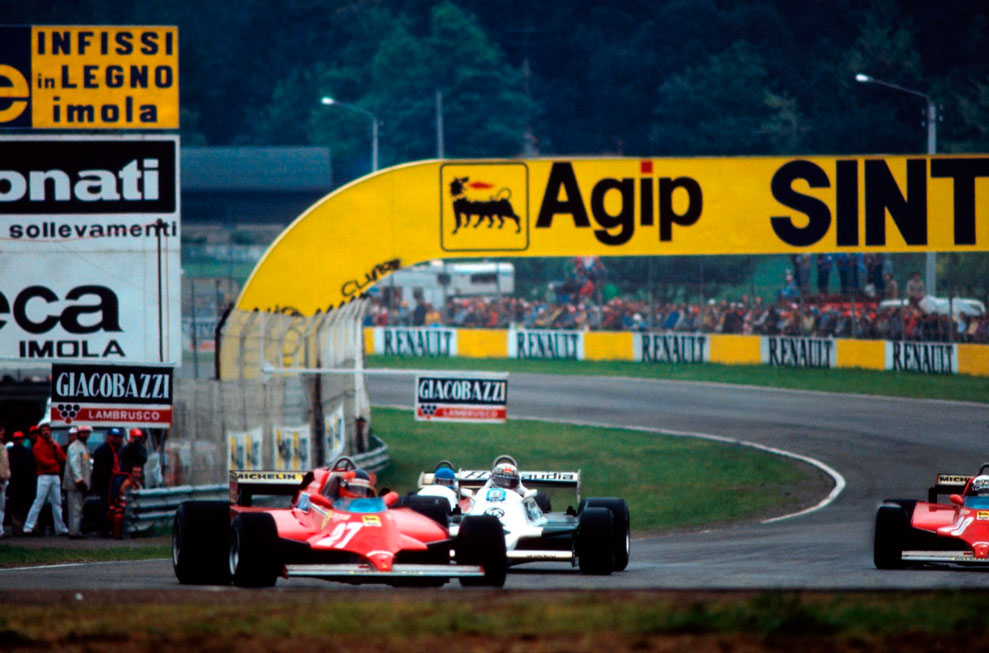

GRANDE VITÓRIA DE PIQUET

Em dia inspirado, Nelson Piquet conquistou, em Imola, sua mais brilhante vitória na Fórmula 1, mas Carlos Reutemann, terceiro colocado, manteve a liderança do campeonato.
Revista Autosport
Quando, depois da disputa do GP do Brasil, em Jacarepaguá, Nelson Piquet ainda procurava esfriar a cabeça tentando explicar a si mesmo porque insistira em correr com pneus slick debaixo daquele verdadeiro dilúvio, o eternamente controvertido Bernie Ecclestone não se fez de rogado. Sem que nada lhe tivessem perguntado ele fez questão de dizer para meia dúzia de jornalistas que “fora um erro imbecil. Agora, vai ser muito difícil encostar em Carlos Reutemann na liderança no campeonato e muito mais difícil ainda pensar no título”.
Em Imola, no GP de São Marino, duas etapas depois, não fosse a emoção da magnífica vitória do brasileiro, o dono da Brabham deveria estar mesmo mordendo a língua e maldizendo suas palavras do Rio de Janeiro. Com quatro corridas disputadas, Nelson Piquet refez-se maravilhosamente do desastre carioca, e com muita justiça. embora ainda um pouco cedo, já é apontado como franco favorito para a conquista do campeonato mundial. Pela 14? vez consecutiva, em um verdadeiro recorde de eficiência e confiabilidade, o argentino Carlos Reutemann marcou pontos em uma prova válida pelo campeonato mundial e manteve a liderança, com 25 pontos, três a mais que o brasileiro.
Nesta prova, uma coisa ficou definida: realmente, só mesmo a Brabham e a Arrows conseguiram desenvolver um artifício que substituísse com bons resultados a abolida minissaia. A suspensão hidro-pneumática dos carros de Nelson Piquet — e Hector Rebaque —, e Riccardo Patrese — e Sigfried Sthor —. embora de compleição diferente, são funcionalmente iguais. Depois de colocadas em julgamento, a FISA finalmente aprovou sua utilização, ao mesmo tempo que vetava em definitivo a participação do Lotus 88, mais uma genial criação de Colin Chapman, que, por sinal não apresentou sua equipe em São Marino, alegando motivo de força maior. Isto, é claro, com a prévia aprovação da FISA que reconheceu que o inglês deveria estar mesmo em maus lençóis, principalmente depois que David Thieme. seu patrocinador da Essex, acabou preso na Suíça por driblar o fisco.

Mas, voltando às atuações aerodinâmicas. Quando a Brabham apareceu em Long Beach com a novidade, Frank Williams tratou de admirá-la, taxando o sistema de simplesmente genial. No Brasil, os dois carros da equipe já surgiam com dispositivos iguais, mas que só podiam ser utilizados quando o entre-eixos do carro fosse o de menor medida. Como na reta do Rio eles acabavam perdendo muita velocidade, resolveu-se alongar os carros e “encostar” temporariamente a invenção. Assim, não foi surpresa a investida de algumas equipes, principalmente a Williams. contra a suposta ilegalidade da novidade mecânica. Bem, a partir do próximo GP é certo que todas as equipes vão apresentar variantes deste sistema, visto que, agora, eles já têm o sinal verde da FISA, e por conseguinte, dos comissários técnicos de cada país,. Resta saber se vão conseguir acertá-los a nível de competição, como o fizeram a Brabham e a Arrows.
Porque, não custa lembrar que até agora, Patrick Head, pai do Williams FW-07, tem tomado uma surra sem tamanho. O que, em primeira instância, é um ponto a favor dos projetistas da Brabham e Arrows, respectivamente Gordon Murray e Tony Southgate. Este último, por sinal, também assina o projeto do novo Theodore, que nas mãos de Patrick Tambay tem desempenhado boas performances.
As novidades
Piquet venceu na Itália e isto só serviu para tornar a disputa pelo título ainda mais acirrada. Venceu, mostrando uma nova faceta, onde cada ultrapassagem foi devidamente ensaiada e realizada com todos os riscos devidamente considerados. Guiou com frieza e muita cabeça. Mas, a grande novidade foi mesmo a volta das Ferrari às posições de liderança. A surpresa pela velocidade demonstrada nos novos modelos turbo só foi batida pela ainda mais surpreendente constatação de que, além de muito rápidos, os turbo da Ferrari são também bastante confiáveis, um acontecimento que até agora, muitas temporadas depois de sua estreia, a Renault não conseguiu contornar.
Gilles Villeneuve conseguiu uma indiscutível pole-position, fácil à frente do grupo, e liderou a prova até que resolvesse parar para uma troca de pneus, visto que a chuva parava de cair, e, logo depois, mudasse de ideia e parasse de novo para outra troca. Diante do vacilo, o canadense fez mais uma corrida dentro de seu mais exuberante estilo, recuperando, volta após volta, as posições perdidas até terminar em 79, já com alguns problemas exatamente com os pneus. Com a parada de Villeneuve. seu companheiro de equipe, Didier Pironi, assumiu a liderança que só ia perder a 13 voltas da bandeirada, já com problemas na suspensão e pneus traseiros. A muito custo, o francês ainda foi quinto, atrás de Piquet, Patresse, Reutemann e, finalmente, Hector Rebaque, que já começa a guiar à altura do eaui-pamento que tem nas mãos. Antes tarde do que nunca… O último a marcar pontos foi Andrea De Cesaris, às custas de uma tocada consistente e de muitos abandonos e paradas nos boxes de outros competidores.

Treinos & Corrida
Depois de muitos testes de desenvolvimento neste circuito, a pole obtida pela Ferrari de Villeneuve — 1m34.52s — não chegou a causar grandes surpresas. Da mesma maneira, a segunda posição de Reutemann, agora claramente mais rápido e competitivo que o campeão mundial, Alan Jones. Surpresa, esta sim, foi a terceira posição de René Arnoux. Embora a adaptação dos motores turbo ao traçado de Imola seja inquestionável, até esta etapa Arnoux vinha sendo facilmente batido por seu parceiro, Alain Prost, que acabou sendo o quarto mais rápido. Piquet era o quinto, muito pouco preocupado com um eventual problema de aerodinâmica e estabilidade, surgido já nos treinos de sexta-feira, talvez, já com a receita de sua vitória na mesma pista, ano passado, na cabeça. Pironi era o sexto — treinando com os dois carros. Watson o sétimo, com o McLaren de fibra de carbono cada vez mais competitivo e com Niki Lauda, louco para faturar mais alguns dólares. dentro do boxe da equipe regulando tudo. Jones, sem problemas mais sérios vinha logo depois, seguido de Patrese, Laffite, Giacomelli, Andretti, Hebaque, De Cesaris, Rosberg — fazendo a estreia oficial dos pneus Avon, de Bernie Ecclestone, produzidos por ex-técnicos da Goodyear e da Firestone —. Tambay, Michelle Alboretto — campeão europeu de F-3 estreando na Tyrrell sem nunca ter treinado de F-1 —, Jabouille — quase recuperado do acidente do GP do Canadá —. Eddie Cheever — pasmem, mais lento que o estreante Alboretto, no mesmo carro. Gabianni — na primeira prova em que os Osella se classificaram —, Surer, Guerra. Salazar — também em sua primeira corrida com o March — e finalmente Slim Borgudd, um ex-baterista de conjuntos de rock, que ganhou destaque na F-3 européia e fazia sua estreia em um pouco competitivo ATS. Chico Serra, que não deu nem 9 voltas completas, não se classificou, o mesmo acontecendo com a equipe estreante Toleman — com motores, Hart-Turbo, e pneus Pirelli, também estreando na categoria.
No pulo inicial Piquet foi bem, subindo para a terceira posição mas, na primeira curva, recebeu um chega-para-lá, preferindo aliviar o acelerador. Foi o bastante. Na primeira volta ele era o nono, atrás de Villeneuve, Pironi, Reutemann. Jones, Patrese — ótima largada — Arnoux, Watson, e Laffite. No caso, melhor para nós que tivemos a graça de assistir a uma reação simplesmente espetacular. Ainda nesta primeira volta, os Williams de Jones e Reutemann se chocaram levemente e, depois da prova, os dois quase chegam às vias de fato, mais uma prova do péssimo clima que vive a equipe campeã e que poderá beneficiar o brasileiro Piquet.
Até a 14ª volta, quando resolveu parar nos boxes, o líder era Villeneuve, mas nesta mesma volta Piquet já era o quinto, depois de ultrapassar a três pilotos e beneficiar-se de uma parada de Alan Jones. Enquanto Pironi mantinha a posição de líder, Piquet levava oito voltas para ultrapassar o argentino Reutemann. Logo depois, perdia mais sete para repetir a operação com Patrese.
A partir da volta nº 32 ele encostou definitivamente em Pironi, mas não contava com a presença de Patrick Tambay que, uma volta atrasado em relação aos lideres, acabou surgindo no meio dos dois. E, foi isso aí. Quando se viu livre de Tambay, Piquet passou a ensaiar a ultrapassagem que acabou consumando-se 14 voltas mais tarde. Esgotado pela resistência que impôs ao brasileiro, a Ferrari de Pironi ainda foi subsequentemente ultrapassada por Patrese, Reutemann e, na bandeirada, por Rebaque.
A única nota ruim do fim de semana foi o acidente sofrido pelo argentino Miguel Angel Guerra, que pela primeira vez conseguiu classificar seu Osella para correr: logo no início da prova ele bateu forte e fraturou um tornozelo e a perna esquerda. Bruno Giacomelli também bateu fortíssimo, felizmente sem maiores consequências, a não ser o susto.